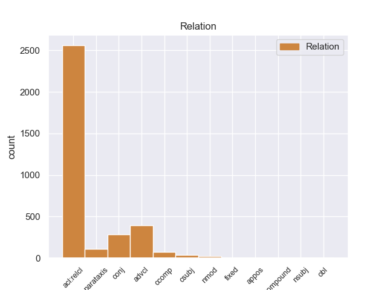
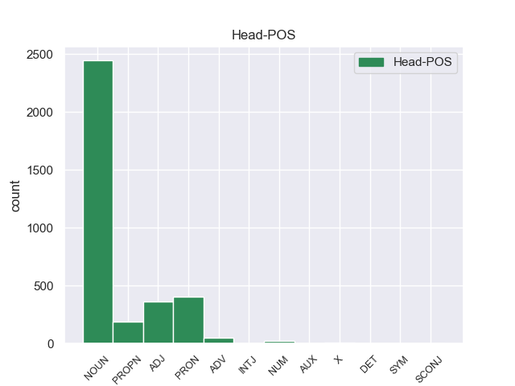
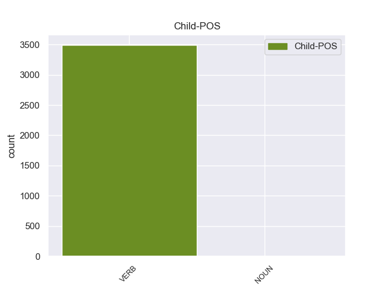

Distribution of features within this leaf



Morphosyntax Rules sorted by frequency.
- When the dependent token is the relative clause modifier(acl:relcl) of the head token, and the head token is NOUN and the dependent token is VERB, the Tense needs to be Pres.
1 Su _ _ _ _ 0 _ _ _
2 le _ _ _ _ 0 _ _ _
3 barche _ _ _ _ 0 _ _ _
4 i _ _ _ _ 0 _ _ _
5 turisti _ _ _ _ 0 _ _ _
6 possono _ _ _ _ 0 _ _ _
7 ascoltare _ _ _ _ 0 _ _ _
8 la _ _ _ _ 0 _ _ _
9 descrizione _ _ _ _ 0 _ _ _
10 e _ _ _ _ 0 _ _ _
11 la _ _ _ _ 0 _ _ _
12 storia _ _ _ _ 0 _ _ _
13 di _ _ _ _ 0 _ _ _
14 i _ _ _ _ 0 _ _ _
15 monumenti monumento NOUN S Gender=Masc|Number=Plur 0 _ _ _
16 che _ _ _ _ 0 _ _ _
17 si _ _ _ _ 0 _ _ _
18 vedono vedere VERB V Mood=Ind|Number=Plur|Person=3|Tense=Pres|VerbForm=Fin 15 acl:relcl 15:acl:relcl _
19 da _ _ _ _ 0 _ _ _
20 il _ _ _ _ 0 _ _ _
21 fiume _ _ _ _ 0 _ _ _
22 . _ _ _ _ 0 _ _ _
1 Questo _ _ _ _ 0 _ _ _
2 tipo _ _ _ _ 0 _ _ _
3 di _ _ _ _ 0 _ _ _
4 riso _ _ _ _ 0 _ _ _
5 è _ _ _ _ 0 _ _ _
6 indicato _ _ _ _ 0 _ _ _
7 per _ _ _ _ 0 _ _ _
8 chi chi PRON PR Number=Sing|PronType=Rel 0 _ _ _
9 ha avere VERB V Mood=Ind|Number=Sing|Person=3|Tense=Pres|VerbForm=Fin 8 acl:relcl 8:acl:relcl _
10 disturbi _ _ _ _ 0 _ _ _
11 di _ _ _ _ 0 _ _ _
12 digestione _ _ _ _ 0 _ _ _
13 , _ _ _ _ 0 _ _ _
14 per _ _ _ _ 0 _ _ _
15 gli _ _ _ _ 0 _ _ _
16 anziani _ _ _ _ 0 _ _ _
17 e _ _ _ _ 0 _ _ _
18 i _ _ _ _ 0 _ _ _
19 bambini _ _ _ _ 0 _ _ _
20 . _ _ _ _ 0 _ _ _
1 Le _ _ _ _ 0 _ _ _
2 parole _ _ _ _ 0 _ _ _
3 di _ _ _ _ 0 _ _ _
4 le _ _ _ _ 0 _ _ _
5 sue _ _ _ _ 0 _ _ _
6 canzoni _ _ _ _ 0 _ _ _
7 sono _ _ _ _ 0 _ _ _
8 poetiche _ _ _ _ 0 _ _ _
9 e _ _ _ _ 0 _ _ _
10 la _ _ _ _ 0 _ _ _
11 musica musica NOUN S Gender=Fem|Number=Sing 0 _ _ _
12 è _ _ _ _ 0 _ _ _
13 particolare _ _ _ _ 0 _ _ _
14 : _ _ _ _ 0 _ _ _
15 emoziona emozionare VERB V Mood=Ind|Number=Sing|Person=3|Tense=Pres|VerbForm=Fin 11 advcl 11:advcl _
16 e _ _ _ _ 0 _ _ _
17 fa _ _ _ _ 0 _ _ _
18 anche _ _ _ _ 0 _ _ _
19 sorridere _ _ _ _ 0 _ _ _
20 . _ _ _ _ 0 _ _ _
1 Il _ _ _ _ 0 _ _ _
2 censimento _ _ _ _ 0 _ _ _
3 ci _ _ _ _ 0 _ _ _
4 fa _ _ _ _ 0 _ _ _
5 sapere _ _ _ _ 0 _ _ _
6 quanti _ _ _ _ 0 _ _ _
7 cittadini _ _ _ _ 0 _ _ _
8 italiani _ _ _ _ 0 _ _ _
9 sono _ _ _ _ 0 _ _ _
10 disoccupati disoccupato ADJ A Gender=Masc|Number=Plur 0 _ _ _
11 , _ _ _ _ 0 _ _ _
12 cioè _ _ _ _ 0 _ _ _
13 quanti _ _ _ _ 0 _ _ _
14 cittadini _ _ _ _ 0 _ _ _
15 italiani _ _ _ _ 0 _ _ _
16 non _ _ _ _ 0 _ _ _
17 hanno avere VERB V Mood=Ind|Number=Plur|Person=3|Tense=Pres|VerbForm=Fin 10 conj 5:ccomp|10:conj:cioè _
18 un _ _ _ _ 0 _ _ _
19 lavoro _ _ _ _ 0 _ _ _
20 . _ _ _ _ 0 _ _ _
1 Da _ _ _ _ 0 _ _ _
2 quasi _ _ _ _ 0 _ _ _
3 vent’ _ _ _ _ 0 _ _ _
4 anni _ _ _ _ 0 _ _ _
5 vive _ _ _ _ 0 _ _ _
6 a _ _ _ _ 0 _ _ _
7 Lugano _ _ _ _ 0 _ _ _
8 , _ _ _ _ 0 _ _ _
9 in _ _ _ _ 0 _ _ _
10 Svizzera Svizzera PROPN SP _ 0 _ _ _
11 dove _ _ _ _ 0 _ _ _
12 lavora lavorare VERB V Mood=Ind|Number=Sing|Person=3|Tense=Pres|VerbForm=Fin 10 acl:relcl 10:acl:relcl _
13 e _ _ _ _ 0 _ _ _
14 fa _ _ _ _ 0 _ _ _
15 molti _ _ _ _ 0 _ _ _
16 dischi _ _ _ _ 0 _ _ _
17 . _ _ _ _ 0 _ _ _
1 Referendum _ _ _ _ 0 _ _ _
2 è _ _ _ _ 0 _ _ _
3 una _ _ _ _ 0 _ _ _
4 parola parola NOUN S Gender=Fem|Number=Sing 0 _ _ _
5 latina _ _ _ _ 0 _ _ _
6 e _ _ _ _ 0 _ _ _
7 indica indicare VERB V Mood=Ind|Number=Sing|Person=3|Tense=Pres|VerbForm=Fin 4 conj 4:conj:e _
8 la _ _ _ _ 0 _ _ _
9 votazione _ _ _ _ 0 _ _ _
10 con _ _ _ _ 0 _ _ _
11 la _ _ _ _ 0 _ _ _
12 quale _ _ _ _ 0 _ _ _
13 tutti _ _ _ _ 0 _ _ _
14 i _ _ _ _ 0 _ _ _
15 cittadini _ _ _ _ 0 _ _ _
16 decidono _ _ _ _ 0 _ _ _
17 direttamente _ _ _ _ 0 _ _ _
18 qualcosa _ _ _ _ 0 _ _ _
19 . _ _ _ _ 0 _ _ _
1 E' _ _ _ _ 0 _ _ _
2 utile utile ADJ A Number=Sing 0 _ _ _
3 in _ _ _ _ 0 _ _ _
4 le _ _ _ _ 0 _ _ _
5 diete _ _ _ _ 0 _ _ _
6 dimagranti _ _ _ _ 0 _ _ _
7 perché _ _ _ _ 0 _ _ _
8 toglie togliere VERB V Mood=Ind|Number=Sing|Person=3|Tense=Pres|VerbForm=Fin 2 advcl 2:advcl:perché _
9 la _ _ _ _ 0 _ _ _
10 fame _ _ _ _ 0 _ _ _
11 ed _ _ _ _ 0 _ _ _
12 è _ _ _ _ 0 _ _ _
13 leggero _ _ _ _ 0 _ _ _
14 . _ _ _ _ 0 _ _ _
1 " _ _ _ _ 0 _ _ _
2 Il _ _ _ _ 0 _ _ _
3 realismo realismo NOUN S Gender=Masc|Number=Sing 0 _ _ _
4 non _ _ _ _ 0 _ _ _
5 è _ _ _ _ 0 _ _ _
6 se _ _ _ _ 0 _ _ _
7 non _ _ _ _ 0 _ _ _
8 urbano _ _ _ _ 0 _ _ _
9 " _ _ _ _ 0 _ _ _
10 , _ _ _ _ 0 _ _ _
11 osserva osservare VERB V Mood=Ind|Number=Sing|Person=3|Tense=Pres|VerbForm=Fin 3 parataxis 3:parataxis _
12 il _ _ _ _ 0 _ _ _
13 critico _ _ _ _ 0 _ _ _
14 Peter _ _ _ _ 0 _ _ _
15 Brooks _ _ _ _ 0 _ _ _
16 ; _ _ _ _ 0 _ _ _
1 Ora _ _ _ _ 0 _ _ _
2 è _ _ _ _ 0 _ _ _
3 indispensabile indispensabile ADJ A Number=Sing 0 _ _ _
4 in _ _ _ _ 0 _ _ _
5 tempi _ _ _ _ 0 _ _ _
6 brevi _ _ _ _ 0 _ _ _
7 procedere _ _ _ _ 0 _ _ _
8 ad _ _ _ _ 0 _ _ _
9 investire _ _ _ _ 0 _ _ _
10 , _ _ _ _ 0 _ _ _
11 come _ _ _ _ 0 _ _ _
12 annunciato _ _ _ _ 0 _ _ _
13 , _ _ _ _ 0 _ _ _
14 in _ _ _ _ 0 _ _ _
15 gli _ _ _ _ 0 _ _ _
16 stabilimenti _ _ _ _ 0 _ _ _
17 italiani _ _ _ _ 0 _ _ _
18 a _ _ _ _ 0 _ _ _
19 partire _ _ _ _ 0 _ _ _
20 da _ _ _ _ 0 _ _ _
21 Mirafiori _ _ _ _ 0 _ _ _
22 e _ _ _ _ 0 _ _ _
23 Cassino _ _ _ _ 0 _ _ _
24 ” _ _ _ _ 0 _ _ _
25 spiega spiegare VERB V Mood=Ind|Number=Sing|Person=3|Tense=Pres|VerbForm=Fin 3 parataxis 3:parataxis _
26 il _ _ _ _ 0 _ _ _
27 segretario _ _ _ _ 0 _ _ _
28 nazionale _ _ _ _ 0 _ _ _
29 Ferdinando _ _ _ _ 0 _ _ _
30 Uliano _ _ _ _ 0 _ _ _
31 . _ _ _ _ 0 _ _ _
1 È _ _ _ _ 0 _ _ _
2 necessario necessario ADJ A Gender=Masc|Number=Sing 0 _ _ _
3 che _ _ _ _ 0 _ _ _
4 l' _ _ _ _ 0 _ _ _
5 amministrazione _ _ _ _ 0 _ _ _
6 Obama _ _ _ _ 0 _ _ _
7 sottoponga sottoporre VERB V Mood=Sub|Number=Sing|Person=3|Tense=Pres|VerbForm=Fin 2 ccomp 2:ccomp _
8 questo _ _ _ _ 0 _ _ _
9 caso _ _ _ _ 0 _ _ _
10 a _ _ _ _ 0 _ _ _
11 il _ _ _ _ 0 _ _ _
12 congresso _ _ _ _ 0 _ _ _
13 in _ _ _ _ 0 _ _ _
14 modo _ _ _ _ 0 _ _ _
15 più _ _ _ _ 0 _ _ _
16 diretto _ _ _ _ 0 _ _ _
17 e _ _ _ _ 0 _ _ _
18 con _ _ _ _ 0 _ _ _
19 maggiore _ _ _ _ 0 _ _ _
20 forza _ _ _ _ 0 _ _ _
21 . _ _ _ _ 0 _ _ _
1 La _ _ _ _ 0 _ _ _
2 proposta _ _ _ _ 0 _ _ _
3 soggetta _ _ _ _ 0 _ _ _
4 a _ _ _ _ 0 _ _ _
5 referendum _ _ _ _ 0 _ _ _
6 è _ _ _ _ 0 _ _ _
7 approvata _ _ _ _ 0 _ _ _
8 se _ _ _ _ 0 _ _ _
9 ha _ _ _ _ 0 _ _ _
10 partecipato _ _ _ _ 0 _ _ _
11 a _ _ _ _ 0 _ _ _
12 la _ _ _ _ 0 _ _ _
13 votazione _ _ _ _ 0 _ _ _
14 la _ _ _ _ 0 _ _ _
15 maggioranza maggioranza NOUN S Gender=Fem|Number=Sing 0 _ _ _
16 di _ _ _ _ 0 _ _ _
17 gli _ _ _ _ 0 _ _ _
18 aventi avere VERB V Number=Plur|Tense=Pres|VerbForm=Part 15 nmod 15:nmod:di _
19 diritto _ _ _ _ 0 _ _ _
20 , _ _ _ _ 0 _ _ _
21 e _ _ _ _ 0 _ _ _
22 se _ _ _ _ 0 _ _ _
23 è _ _ _ _ 0 _ _ _
24 raggiunta _ _ _ _ 0 _ _ _
25 la _ _ _ _ 0 _ _ _
26 maggioranza _ _ _ _ 0 _ _ _
27 di _ _ _ _ 0 _ _ _
28 i _ _ _ _ 0 _ _ _
29 voti _ _ _ _ 0 _ _ _
30 validamente _ _ _ _ 0 _ _ _
31 espressi _ _ _ _ 0 _ _ _
32 . _ _ _ _ 0 _ _ _
1 Alcuni _ _ _ _ 0 _ _ _
2 inquinanti _ _ _ _ 0 _ _ _
3 li _ _ _ _ 0 _ _ _
4 abbiamo _ _ _ _ 0 _ _ _
5 creati _ _ _ _ 0 _ _ _
6 noi _ _ _ _ 0 _ _ _
7 , _ _ _ _ 0 _ _ _
8 molecole _ _ _ _ 0 _ _ _
9 come _ _ _ _ 0 _ _ _
10 i _ _ _ _ 0 _ _ _
11 PCB _ _ _ _ 0 _ _ _
12 , _ _ _ _ 0 _ _ _
13 che che PRON PR PronType=Rel 0 _ _ _
14 il _ _ _ _ 0 _ _ _
15 nostro _ _ _ _ 0 _ _ _
16 organismo _ _ _ _ 0 _ _ _
17 non _ _ _ _ 0 _ _ _
18 riesce _ _ _ _ 0 _ _ _
19 a _ _ _ _ 0 _ _ _
20 scindere _ _ _ _ 0 _ _ _
21 , _ _ _ _ 0 _ _ _
22 e _ _ _ _ 0 _ _ _
23 che _ _ _ _ 0 _ _ _
24 finiscono _ _ _ _ 0 _ _ _
25 a _ _ _ _ 0 _ _ _
26 la _ _ _ _ 0 _ _ _
27 base _ _ _ _ 0 _ _ _
28 di _ _ _ _ 0 _ _ _
29 quella _ _ _ _ 0 _ _ _
30 piramide _ _ _ _ 0 _ _ _
31 , _ _ _ _ 0 _ _ _
32 e _ _ _ _ 0 _ _ _
33 risalgono risalire VERB V Mood=Ind|Number=Plur|Person=3|Tense=Pres|VerbForm=Fin 13 conj 13:conj:e|18:obj SpaceAfter=No
34 , _ _ _ _ 0 _ _ _
35 e _ _ _ _ 0 _ _ _
36 in _ _ _ _ 0 _ _ _
37 quel _ _ _ _ 0 _ _ _
38 modo _ _ _ _ 0 _ _ _
39 vengono _ _ _ _ 0 _ _ _
40 passati _ _ _ _ 0 _ _ _
41 verso _ _ _ _ 0 _ _ _
42 l' _ _ _ _ 0 _ _ _
43 alto _ _ _ _ 0 _ _ _
44 , _ _ _ _ 0 _ _ _
45 a _ _ _ _ 0 _ _ _
46 i _ _ _ _ 0 _ _ _
47 predatori _ _ _ _ 0 _ _ _
48 fino _ _ _ _ 0 _ _ _
49 a _ _ _ _ 0 _ _ _
50 i _ _ _ _ 0 _ _ _
51 predatori _ _ _ _ 0 _ _ _
52 in _ _ _ _ 0 _ _ _
53 cima _ _ _ _ 0 _ _ _
54 a _ _ _ _ 0 _ _ _
55 la _ _ _ _ 0 _ _ _
56 piramide _ _ _ _ 0 _ _ _
57 . _ _ _ _ 0 _ _ _
1 Il _ _ _ _ 0 _ _ _
2 divario _ _ _ _ 0 _ _ _
3 di _ _ _ _ 0 _ _ _
4 genere _ _ _ _ 0 _ _ _
5 in _ _ _ _ 0 _ _ _
6 il _ _ _ _ 0 _ _ _
7 settore _ _ _ _ 0 _ _ _
8 agricolo _ _ _ _ 0 _ _ _
9 africano _ _ _ _ 0 _ _ _
10 , _ _ _ _ 0 _ _ _
11 ecco ecco ADV B _ 0 _ _ _
12 perché _ _ _ _ 0 _ _ _
13 bisogna bisognare VERB V Mood=Ind|Number=Sing|Person=3|Tense=Pres|VerbForm=Fin 11 ccomp 11:ccomp _
14 chiuder _ _ _ _ 0 _ _ _
15 lo _ _ _ _ 0 _ _ _
16 . _ _ _ _ 0 _ _ _
1 Non _ _ _ _ 0 _ _ _
2 è _ _ _ _ 0 _ _ _
3 chiaro chiaro ADJ A Gender=Masc|Number=Sing 0 _ _ _
4 se _ _ _ _ 0 _ _ _
5 queste _ _ _ _ 0 _ _ _
6 figure _ _ _ _ 0 _ _ _
7 rappresentino rappresentare VERB V Mood=Sub|Number=Plur|Person=3|Tense=Pres|VerbForm=Fin 3 csubj 3:csubj _
8 individui _ _ _ _ 0 _ _ _
9 reali _ _ _ _ 0 _ _ _
10 , _ _ _ _ 0 _ _ _
11 o _ _ _ _ 0 _ _ _
12 se _ _ _ _ 0 _ _ _
13 l' _ _ _ _ 0 _ _ _
14 " _ _ _ _ 0 _ _ _
15 io _ _ _ _ 0 _ _ _
16 " _ _ _ _ 0 _ _ _
17 di _ _ _ _ 0 _ _ _
18 l' _ _ _ _ 0 _ _ _
19 autore _ _ _ _ 0 _ _ _
20 che _ _ _ _ 0 _ _ _
21 si _ _ _ _ 0 _ _ _
22 rivolge _ _ _ _ 0 _ _ _
23 loro _ _ _ _ 0 _ _ _
24 sia _ _ _ _ 0 _ _ _
25 lo _ _ _ _ 0 _ _ _
26 stesso _ _ _ _ 0 _ _ _
27 Shakespeare _ _ _ _ 0 _ _ _
28 , _ _ _ _ 0 _ _ _
29 anche _ _ _ _ 0 _ _ _
30 se _ _ _ _ 0 _ _ _
31 Wordsworth _ _ _ _ 0 _ _ _
32 riteneva _ _ _ _ 0 _ _ _
33 che _ _ _ _ 0 _ _ _
34 con _ _ _ _ 0 _ _ _
35 i _ _ _ _ 0 _ _ _
36 Sonetti _ _ _ _ 0 _ _ _
37 Shakespeare _ _ _ _ 0 _ _ _
38 avesse _ _ _ _ 0 _ _ _
39 " _ _ _ _ 0 _ _ _
40 aperto _ _ _ _ 0 _ _ _
41 il _ _ _ _ 0 _ _ _
42 suo _ _ _ _ 0 _ _ _
43 cuore _ _ _ _ 0 _ _ _
44 " _ _ _ _ 0 _ _ _
45 . _ _ _ _ 0 _ _ _
1 Fu _ _ _ _ 0 _ _ _
2 rimpiazzato _ _ _ _ 0 _ _ _
3 da _ _ _ _ 0 _ _ _
4 Robert _ _ _ _ 0 _ _ _
5 Armin _ _ _ _ 0 _ _ _
6 a _ _ _ _ 0 _ _ _
7 cavallo _ _ _ _ 0 _ _ _
8 di _ _ _ _ 0 _ _ _
9 il _ _ _ _ 0 _ _ _
10 XVI _ _ _ _ 0 _ _ _
11 secolo _ _ _ _ 0 _ _ _
12 , _ _ _ _ 0 _ _ _
13 che _ _ _ _ 0 _ _ _
14 recitò _ _ _ _ 0 _ _ _
15 in _ _ _ _ 0 _ _ _
16 parti _ _ _ _ 0 _ _ _
17 come _ _ _ _ 0 _ _ _
18 quella quello PRON PD Gender=Fem|Number=Sing|PronType=Dem 0 _ _ _
19 di _ _ _ _ 0 _ _ _
20 Touchstone _ _ _ _ 0 _ _ _
21 in _ _ _ _ 0 _ _ _
22 Come _ _ _ _ 0 _ _ _
23 vi _ _ _ _ 0 _ _ _
24 piace piacere VERB V Mood=Ind|Number=Plur|Person=2|Tense=Pres|VerbForm=Fin 18 advcl 18:advcl:come _
25 e _ _ _ _ 0 _ _ _
26 quella _ _ _ _ 0 _ _ _
27 di _ _ _ _ 0 _ _ _
28 il _ _ _ _ 0 _ _ _
29 pazzo _ _ _ _ 0 _ _ _
30 in _ _ _ _ 0 _ _ _
31 Re _ _ _ _ 0 _ _ _
32 Lear _ _ _ _ 0 _ _ _
33 . _ _ _ _ 0 _ _ _
1 Ed _ _ _ _ 0 _ _ _
2 è _ _ _ _ 0 _ _ _
3 questa _ _ _ _ 0 _ _ _
4 la _ _ _ _ 0 _ _ _
5 differenza _ _ _ _ 0 _ _ _
6 tra _ _ _ _ 0 _ _ _
7 un _ _ _ _ 0 _ _ _
8 PCB _ _ _ _ 0 _ _ _
9 e _ _ _ _ 0 _ _ _
10 qualcosa _ _ _ _ 0 _ _ _
11 di _ _ _ _ 0 _ _ _
12 naturale _ _ _ _ 0 _ _ _
13 come _ _ _ _ 0 _ _ _
14 , _ _ _ _ 0 _ _ _
15 diciamo dire VERB V Mood=Ind|Number=Plur|Person=1|Tense=Pres|VerbForm=Fin 18 advcl 18:advcl SpaceAfter=No
16 , _ _ _ _ 0 _ _ _
17 un _ _ _ _ 0 _ _ _
18 Omega-3 Omega-3 PROPN SP _ 0 _ _ _
19 , _ _ _ _ 0 _ _ _
20 che _ _ _ _ 0 _ _ _
21 desideriamo _ _ _ _ 0 _ _ _
22 ricavare _ _ _ _ 0 _ _ _
23 da _ _ _ _ 0 _ _ _
24 la _ _ _ _ 0 _ _ _
25 catena _ _ _ _ 0 _ _ _
26 alimentare _ _ _ _ 0 _ _ _
27 marina _ _ _ _ 0 _ _ _
28 . _ _ _ _ 0 _ _ _
1 « _ _ _ _ 0 _ _ _
2 Un _ _ _ _ 0 _ _ _
3 Nicholson Nicholson PROPN SP _ 0 _ _ _
4 - _ _ _ _ 0 _ _ _
5 si _ _ _ _ 0 _ _ _
6 permette permettere VERB V Mood=Ind|Number=Sing|Person=3|Tense=Pres|VerbForm=Fin 3 parataxis 3:parataxis _
7 il _ _ _ _ 0 _ _ _
8 cronista _ _ _ _ 0 _ _ _
9 - _ _ _ _ 0 _ _ _
10 visto _ _ _ _ 0 _ _ _
11 in _ _ _ _ 0 _ _ _
12 il _ _ _ _ 0 _ _ _
13 ruolo _ _ _ _ 0 _ _ _
14 di _ _ _ _ 0 _ _ _
15 partner _ _ _ _ 0 _ _ _
16 o _ _ _ _ 0 _ _ _
17 di _ _ _ _ 0 _ _ _
18 ... _ _ _ _ 0 _ _ _
19 nonno _ _ _ _ 0 _ _ _
20 ? _ _ _ _ 0 _ _ _
21 » _ _ _ _ 0 _ _ _
22 . _ _ _ _ 0 _ _ _
1 La _ _ _ _ 0 _ _ _
2 buona _ _ _ _ 0 _ _ _
3 notizia notizia NOUN S Gender=Fem|Number=Sing 0 _ _ _
4 è _ _ _ _ 0 _ _ _
5 che _ _ _ _ 0 _ _ _
6 c' _ _ _ _ 0 _ _ _
7 è essere VERB V Mood=Ind|Number=Sing|Person=3|Tense=Pres|VerbForm=Fin 3 ccomp 3:ccomp _
8 una _ _ _ _ 0 _ _ _
9 nuova _ _ _ _ 0 _ _ _
10 tecnologia _ _ _ _ 0 _ _ _
11 pronta _ _ _ _ 0 _ _ _
12 ad _ _ _ _ 0 _ _ _
13 essere _ _ _ _ 0 _ _ _
14 testata _ _ _ _ 0 _ _ _
15 su _ _ _ _ 0 _ _ _
16 il _ _ _ _ 0 _ _ _
17 campo _ _ _ _ 0 _ _ _
18 . _ _ _ _ 0 _ _ _
1 Le _ _ _ _ 0 _ _ _
2 squadre _ _ _ _ 0 _ _ _
3 di _ _ _ _ 0 _ _ _
4 serie _ _ _ _ 0 _ _ _
5 A _ _ _ _ 0 _ _ _
6 sono _ _ _ _ 0 _ _ _
7 18 18 NUM N NumType=Card 0 _ _ _
8 e _ _ _ _ 0 _ _ _
9 giocano giocare VERB V Mood=Ind|Number=Plur|Person=3|Tense=Pres|VerbForm=Fin 7 conj 7:conj:e _
10 34 _ _ _ _ 0 _ _ _
11 partite _ _ _ _ 0 _ _ _
12 . _ _ _ _ 0 _ _ _
1 " _ _ _ _ 0 _ _ _
2 Ma _ _ _ _ 0 _ _ _
3 il _ _ _ _ 0 _ _ _
4 figlio _ _ _ _ 0 _ _ _
5 è _ _ _ _ 0 _ _ _
6 di _ _ _ _ 0 _ _ _
7 chi chi PRON PR PronType=Rel 0 _ _ _
8 se _ _ _ _ 0 _ _ _
9 l' _ _ _ _ 0 _ _ _
10 è _ _ _ _ 0 _ _ _
11 cresciuto _ _ _ _ 0 _ _ _
12 , _ _ _ _ 0 _ _ _
13 non _ _ _ _ 0 _ _ _
14 di _ _ _ _ 0 _ _ _
15 chi _ _ _ _ 0 _ _ _
16 l' _ _ _ _ 0 _ _ _
17 ha _ _ _ _ 0 _ _ _
18 fatto _ _ _ _ 0 _ _ _
19 nascere _ _ _ _ 0 _ _ _
20 " _ _ _ _ 0 _ _ _
21 , _ _ _ _ 0 _ _ _
22 dicono dire VERB V Mood=Ind|Number=Plur|Person=3|Tense=Pres|VerbForm=Fin 7 parataxis 7:parataxis _
23 a _ _ _ _ 0 _ _ _
24 San _ _ _ _ 0 _ _ _
25 Pietro _ _ _ _ 0 _ _ _
26 Vernotico _ _ _ _ 0 _ _ _
27 , _ _ _ _ 0 _ _ _
28 dove _ _ _ _ 0 _ _ _
29 Mister _ _ _ _ 0 _ _ _
30 Volare _ _ _ _ 0 _ _ _
31 si _ _ _ _ 0 _ _ _
32 trasferì _ _ _ _ 0 _ _ _
33 a _ _ _ _ 0 _ _ _
34 nove _ _ _ _ 0 _ _ _
35 anni _ _ _ _ 0 _ _ _
36 . _ _ _ _ 0 _ _ _
1 Mayo _ _ _ _ 0 _ _ _
2 Clinic _ _ _ _ 0 _ _ _
3 è _ _ _ _ 0 _ _ _
4 qui qui ADV B _ 0 _ _ _
5 che _ _ _ _ 0 _ _ _
6 si _ _ _ _ 0 _ _ _
7 fa fare VERB V Mood=Ind|Number=Sing|Person=3|Tense=Pres|VerbForm=Fin 4 csubj 4:csubj _
8 il _ _ _ _ 0 _ _ _
9 check-up _ _ _ _ 0 _ _ _
10 più _ _ _ _ 0 _ _ _
11 famoso _ _ _ _ 0 _ _ _
12 di _ _ _ _ 0 _ _ _
13 il _ _ _ _ 0 _ _ _
14 mondo _ _ _ _ 0 _ _ _
15 . _ _ _ _ 0 _ _ _
1 Il _ _ _ _ 0 _ _ _
2 titolo _ _ _ _ 0 _ _ _
3 di _ _ _ _ 0 _ _ _
4 il _ _ _ _ 0 _ _ _
5 nuovo _ _ _ _ 0 _ _ _
6 disco _ _ _ _ 0 _ _ _
7 di _ _ _ _ 0 _ _ _
8 Bruce _ _ _ _ 0 _ _ _
9 Springsteen _ _ _ _ 0 _ _ _
10 si _ _ _ _ 0 _ _ _
11 chiama _ _ _ _ 0 _ _ _
12 The The X SW Foreign=Yes 0 _ _ _
13 Rising _ _ _ _ 0 _ _ _
14 che _ _ _ _ 0 _ _ _
15 significa significare VERB V Mood=Ind|Number=Sing|Person=3|Tense=Pres|VerbForm=Fin 12 acl:relcl 12:acl:relcl _
16 " _ _ _ _ 0 _ _ _
17 La _ _ _ _ 0 _ _ _
18 rinascita _ _ _ _ 0 _ _ _
19 " _ _ _ _ 0 _ _ _
20 . _ _ _ _ 0 _ _ _
1 E' _ _ _ _ 0 _ _ _
2 infatti _ _ _ _ 0 _ _ _
3 evidente evidente ADJ A Number=Sing 0 _ _ _
4 che _ _ _ _ 0 _ _ _
5 anche _ _ _ _ 0 _ _ _
6 in _ _ _ _ 0 _ _ _
7 il _ _ _ _ 0 _ _ _
8 caso _ _ _ _ 0 _ _ _
9 in _ _ _ _ 0 _ _ _
10 cui _ _ _ _ 0 _ _ _
11 a _ _ _ _ 0 _ _ _
12 l' _ _ _ _ 0 _ _ _
13 interno _ _ _ _ 0 _ _ _
14 di _ _ _ _ 0 _ _ _
15 l' _ _ _ _ 0 _ _ _
16 Unione _ _ _ _ 0 _ _ _
17 Europea _ _ _ _ 0 _ _ _
18 venissero _ _ _ _ 0 _ _ _
19 adottate _ _ _ _ 0 _ _ _
20 norme _ _ _ _ 0 _ _ _
21 pienamente _ _ _ _ 0 _ _ _
22 adeguate _ _ _ _ 0 _ _ _
23 , _ _ _ _ 0 _ _ _
24 i _ _ _ _ 0 _ _ _
25 mezzi _ _ _ _ 0 _ _ _
26 di _ _ _ _ 0 _ _ _
27 trasporto _ _ _ _ 0 _ _ _
28 non _ _ _ _ 0 _ _ _
29 si _ _ _ _ 0 _ _ _
30 fermerebbero fermare VERB V Mood=Cnd|Number=Plur|Person=3|Tense=Pres|VerbForm=Fin 3 acl:relcl 3:acl:relcl _
31 a _ _ _ _ 0 _ _ _
32 i _ _ _ _ 0 _ _ _
33 suoi _ _ _ _ 0 _ _ _
34 confini _ _ _ _ 0 _ _ _
35 . _ _ _ _ 0 _ _ _
1 Quando _ _ _ _ 0 _ _ _
2 non _ _ _ _ 0 _ _ _
3 vi _ _ _ _ 0 _ _ _
4 vedo vedere VERB V Mood=Ind|Number=Sing|Person=1|Tense=Pres|VerbForm=Fin 6 advcl 6:advcl:quando _
5 è _ _ _ _ 0 _ _ _
6 meglio meglio ADV B _ 0 _ _ _
7 per _ _ _ _ 0 _ _ _
8 voi _ _ _ _ 0 _ _ _
9 e _ _ _ _ 0 _ _ _
10 per _ _ _ _ 0 _ _ _
11 me _ _ _ _ 0 _ _ _
12 . _ _ _ _ 0 _ _ _
1 " _ _ _ _ 0 _ _ _
2 È _ _ _ _ 0 _ _ _
3 da _ _ _ _ 0 _ _ _
4 trent' _ _ _ _ 0 _ _ _
5 anni anno NOUN S Gender=Masc|Number=Plur 0 _ _ _
6 che _ _ _ _ 0 _ _ _
7 chiedo chiedere VERB V Mood=Ind|Number=Sing|Person=1|Tense=Pres|VerbForm=Fin 5 csubj 5:csubj _
8 qual _ _ _ _ 0 _ _ _
9 è _ _ _ _ 0 _ _ _
10 la _ _ _ _ 0 _ _ _
11 ragione _ _ _ _ 0 _ _ _
12 di _ _ _ _ 0 _ _ _
13 il _ _ _ _ 0 _ _ _
14 successo _ _ _ _ 0 _ _ _
15 di _ _ _ _ 0 _ _ _
16 la _ _ _ _ 0 _ _ _
17 Mayo _ _ _ _ 0 _ _ _
18 e _ _ _ _ 0 _ _ _
19 quasi _ _ _ _ 0 _ _ _
20 sempre _ _ _ _ 0 _ _ _
21 mi _ _ _ _ 0 _ _ _
22 si _ _ _ _ 0 _ _ _
23 risponde _ _ _ _ 0 _ _ _
24 : _ _ _ _ 0 _ _ _
1 E _ _ _ _ 0 _ _ _
2 da _ _ _ _ 0 _ _ _
3 qui _ _ _ _ 0 _ _ _
4 riprende _ _ _ _ 0 _ _ _
5 la _ _ _ _ 0 _ _ _
6 marcia _ _ _ _ 0 _ _ _
7 , _ _ _ _ 0 _ _ _
8 da _ _ _ _ 0 _ _ _
9 un _ _ _ _ 0 _ _ _
10 ragazzo _ _ _ _ 0 _ _ _
11 che _ _ _ _ 0 _ _ _
12 " _ _ _ _ 0 _ _ _
13 sgomita _ _ _ _ 0 _ _ _
14 " _ _ _ _ 0 _ _ _
15 come _ _ _ _ 0 _ _ _
16 lui _ _ _ _ 0 _ _ _
17 , _ _ _ _ 0 _ _ _
18 ne _ _ _ _ 0 _ _ _
19 rammenta _ _ _ _ 0 _ _ _
20 l' _ _ _ _ 0 _ _ _
21 incedere _ _ _ _ 0 _ _ _
22 , _ _ _ _ 0 _ _ _
23 la _ _ _ _ 0 _ _ _
24 classe _ _ _ _ 0 _ _ _
25 , _ _ _ _ 0 _ _ _
26 quella _ _ _ _ 0 _ _ _
27 forza _ _ _ _ 0 _ _ _
28 mentale _ _ _ _ 0 _ _ _
29 che _ _ _ _ 0 _ _ _
30 ti _ _ _ _ 0 _ _ _
31 porta _ _ _ _ 0 _ _ _
32 diritto diritto ADV B _ 0 _ _ _
33 dove _ _ _ _ 0 _ _ _
34 solo _ _ _ _ 0 _ _ _
35 i _ _ _ _ 0 _ _ _
36 campioni _ _ _ _ 0 _ _ _
37 sanno sapere VERB V Mood=Ind|Number=Plur|Person=3|Tense=Pres|VerbForm=Fin 32 acl:relcl 32:acl:relcl _
38 arrivare _ _ _ _ 0 _ _ _
39 . _ _ _ _ 0 _ _ _
1 Non _ _ _ _ 0 _ _ _
2 s' _ _ _ _ 0 _ _ _
3 è _ _ _ _ 0 _ _ _
4 perso _ _ _ _ 0 _ _ _
5 per _ _ _ _ 0 _ _ _
6 strada _ _ _ _ 0 _ _ _
7 Michele _ _ _ _ 0 _ _ _
8 Didoni _ _ _ _ 0 _ _ _
9 , _ _ _ _ 0 _ _ _
10 e _ _ _ _ 0 _ _ _
11 sì sì INTJ I Polarity=Pos 0 _ _ _
12 che _ _ _ _ 0 _ _ _
13 marcia marciare VERB V Mood=Ind|Number=Sing|Person=3|Tense=Pres|VerbForm=Fin 11 advcl 11:advcl _
14 da _ _ _ _ 0 _ _ _
15 quando _ _ _ _ 0 _ _ _
16 aveva _ _ _ _ 0 _ _ _
17 tre _ _ _ _ 0 _ _ _
18 anni _ _ _ _ 0 _ _ _
19 e _ _ _ _ 0 _ _ _
20 mezzo _ _ _ _ 0 _ _ _
21 , _ _ _ _ 0 _ _ _
22 perché _ _ _ _ 0 _ _ _
23 il _ _ _ _ 0 _ _ _
24 fratello _ _ _ _ 0 _ _ _
25 - _ _ _ _ 0 _ _ _
26 che _ _ _ _ 0 _ _ _
27 oggi _ _ _ _ 0 _ _ _
28 vive _ _ _ _ 0 _ _ _
29 ad _ _ _ _ 0 _ _ _
30 Albacete _ _ _ _ 0 _ _ _
31 , _ _ _ _ 0 _ _ _
32 in _ _ _ _ 0 _ _ _
33 Spagna _ _ _ _ 0 _ _ _
34 - _ _ _ _ 0 _ _ _
35 lo _ _ _ _ 0 _ _ _
36 prendeva _ _ _ _ 0 _ _ _
37 per _ _ _ _ 0 _ _ _
38 mano _ _ _ _ 0 _ _ _
39 e _ _ _ _ 0 _ _ _
40 lo _ _ _ _ 0 _ _ _
41 portava _ _ _ _ 0 _ _ _
42 con _ _ _ _ 0 _ _ _
43 sè _ _ _ _ 0 _ _ _
44 , _ _ _ _ 0 _ _ _
45 perché _ _ _ _ 0 _ _ _
46 imitasse _ _ _ _ 0 _ _ _
47 quel _ _ _ _ 0 _ _ _
48 gioco _ _ _ _ 0 _ _ _
49 a _ _ _ _ 0 _ _ _
50 dondolo _ _ _ _ 0 _ _ _
51 . _ _ _ _ 0 _ _ _
1 Per _ _ _ _ 0 _ _ _
2 i _ _ _ _ 0 _ _ _
3 miei _ _ _ _ 0 _ _ _
4 antenati _ _ _ _ 0 _ _ _
5 , _ _ _ _ 0 _ _ _
6 come _ _ _ _ 0 _ _ _
7 per _ _ _ _ 0 _ _ _
8 i _ _ _ _ 0 _ _ _
9 suoi _ _ _ _ 0 _ _ _
10 , _ _ _ _ 0 _ _ _
11 pisciare _ _ _ _ 0 _ _ _
12 su _ _ _ _ 0 _ _ _
13 l' _ _ _ _ 0 _ _ _
14 aia _ _ _ _ 0 _ _ _
15 , _ _ _ _ 0 _ _ _
16 davanti _ _ _ _ 0 _ _ _
17 a _ _ _ _ 0 _ _ _
18 l' _ _ _ _ 0 _ _ _
19 uscio _ _ _ _ 0 _ _ _
20 di _ _ _ _ 0 _ _ _
21 casa _ _ _ _ 0 _ _ _
22 , _ _ _ _ 0 _ _ _
23 è _ _ _ _ 0 _ _ _
24 stato essere AUX VA Gender=Masc|Number=Sing|Tense=Past|VerbForm=Part 0 _ _ _
25 per _ _ _ _ 0 _ _ _
26 secoli _ _ _ _ 0 _ _ _
27 un _ _ _ _ 0 _ _ _
28 comportamento _ _ _ _ 0 _ _ _
29 tradizionale _ _ _ _ 0 _ _ _
30 e _ _ _ _ 0 _ _ _
31 pieno _ _ _ _ 0 _ _ _
32 di _ _ _ _ 0 _ _ _
33 dignità _ _ _ _ 0 _ _ _
34 e _ _ _ _ 0 _ _ _
35 mi _ _ _ _ 0 _ _ _
36 fa fare VERB V Mood=Ind|Number=Sing|Person=3|Tense=Pres|VerbForm=Fin 24 conj 24:conj:e _
37 piacere _ _ _ _ 0 _ _ _
38 che _ _ _ _ 0 _ _ _
39 lei _ _ _ _ 0 _ _ _
40 non _ _ _ _ 0 _ _ _
41 abbia _ _ _ _ 0 _ _ _
42 tralignato _ _ _ _ 0 _ _ _
43 . _ _ _ _ 0 _ _ _
1 LOCARNO _ _ _ _ 0 _ _ _
2 " _ _ _ _ 0 _ _ _
3 Certo certo ADV B _ 0 _ _ _
4 che _ _ _ _ 0 _ _ _
5 è _ _ _ _ 0 _ _ _
6 proprio _ _ _ _ 0 _ _ _
7 bello _ _ _ _ 0 _ _ _
8 " _ _ _ _ 0 _ _ _
9 , _ _ _ _ 0 _ _ _
10 dice dire VERB V Mood=Ind|Number=Sing|Person=3|Tense=Pres|VerbForm=Fin 3 parataxis 3:parataxis _
11 una _ _ _ _ 0 _ _ _
12 ragazzina _ _ _ _ 0 _ _ _
13 mangiando _ _ _ _ 0 _ _ _
14 si _ _ _ _ 0 _ _ _
15 con _ _ _ _ 0 _ _ _
16 gli _ _ _ _ 0 _ _ _
17 occhi _ _ _ _ 0 _ _ _
18 Matt _ _ _ _ 0 _ _ _
19 Dillon _ _ _ _ 0 _ _ _
20 . _ _ _ _ 0 _ _ _
1 Max _ _ _ _ 0 _ _ _
2 Sciandri _ _ _ _ 0 _ _ _
3 , _ _ _ _ 0 _ _ _
4 nato _ _ _ _ 0 _ _ _
5 a _ _ _ _ 0 _ _ _
6 Derby _ _ _ _ 0 _ _ _
7 28 _ _ _ _ 0 _ _ _
8 anni _ _ _ _ 0 _ _ _
9 or or ADV B _ 0 _ _ _
10 sono essere VERB V Mood=Ind|Number=Plur|Person=3|Tense=Pres|VerbForm=Fin 9 fixed 9:fixed _
11 da _ _ _ _ 0 _ _ _
12 genitori _ _ _ _ 0 _ _ _
13 toscani _ _ _ _ 0 _ _ _
14 che _ _ _ _ 0 _ _ _
15 gestivano _ _ _ _ 0 _ _ _
16 un _ _ _ _ 0 _ _ _
17 ristorante _ _ _ _ 0 _ _ _
18 , _ _ _ _ 0 _ _ _
19 ha _ _ _ _ 0 _ _ _
20 sempre _ _ _ _ 0 _ _ _
21 mantenuto _ _ _ _ 0 _ _ _
22 il _ _ _ _ 0 _ _ _
23 doppio _ _ _ _ 0 _ _ _
24 passaporto _ _ _ _ 0 _ _ _
25 . _ _ _ _ 0 _ _ _
1 " _ _ _ _ 0 _ _ _
2 I I X SW Foreign=Yes 0 _ _ _
3 love _ _ _ _ 0 _ _ _
4 you _ _ _ _ 0 _ _ _
5 too _ _ _ _ 0 _ _ _
6 " _ _ _ _ 0 _ _ _
7 risponde rispondere VERB V Mood=Ind|Number=Sing|Person=3|Tense=Pres|VerbForm=Fin 2 parataxis 2:parataxis _
8 in _ _ _ _ 0 _ _ _
9 inglese _ _ _ _ 0 _ _ _
10 la _ _ _ _ 0 _ _ _
11 May _ _ _ _ 0 _ _ _
12 che _ _ _ _ 0 _ _ _
13 tra _ _ _ _ 0 _ _ _
14 lacrime _ _ _ _ 0 _ _ _
15 , _ _ _ _ 0 _ _ _
16 sorrisi _ _ _ _ 0 _ _ _
17 di _ _ _ _ 0 _ _ _
18 gioia _ _ _ _ 0 _ _ _
19 e _ _ _ _ 0 _ _ _
20 le _ _ _ _ 0 _ _ _
21 domande _ _ _ _ 0 _ _ _
22 di _ _ _ _ 0 _ _ _
23 il _ _ _ _ 0 _ _ _
24 giornalista _ _ _ _ 0 _ _ _
25 di _ _ _ _ 0 _ _ _
26 la _ _ _ _ 0 _ _ _
27 Tgs _ _ _ _ 0 _ _ _
28 Mario _ _ _ _ 0 _ _ _
29 Mattioli _ _ _ _ 0 _ _ _
30 ha _ _ _ _ 0 _ _ _
31 modo _ _ _ _ 0 _ _ _
32 di _ _ _ _ 0 _ _ _
33 commuover _ _ _ _ 0 _ _ _
34 si _ _ _ _ 0 _ _ _
35 : _ _ _ _ 0 _ _ _
1 A _ _ _ _ 0 _ _ _
2 gli _ _ _ _ 0 _ _ _
3 stranieri _ _ _ _ 0 _ _ _
4 viene _ _ _ _ 0 _ _ _
5 proposto _ _ _ _ 0 _ _ _
6 un _ _ _ _ 0 _ _ _
7 interprete _ _ _ _ 0 _ _ _
8 ( _ _ _ _ 0 _ _ _
9 ce _ _ _ _ 0 _ _ _
10 ne _ _ _ _ 0 _ _ _
11 sono _ _ _ _ 0 _ _ _
12 quattro quattro NUM N NumType=Card 0 _ _ _
13 che _ _ _ _ 0 _ _ _
14 parlano parlare VERB V Mood=Ind|Number=Plur|Person=3|Tense=Pres|VerbForm=Fin 12 acl:relcl 12:acl:relcl _
15 in _ _ _ _ 0 _ _ _
16 totale _ _ _ _ 0 _ _ _
17 trenta _ _ _ _ 0 _ _ _
18 lingue _ _ _ _ 0 _ _ _
19 ) _ _ _ _ 0 _ _ _
20 . _ _ _ _ 0 _ _ _
1 I _ _ _ _ 0 _ _ _
2 simpatizzanti _ _ _ _ 0 _ _ _
3 sono _ _ _ _ 0 _ _ _
4 40 40 NUM N NumType=Card 0 _ _ _
5 mila _ _ _ _ 0 _ _ _
6 , _ _ _ _ 0 _ _ _
7 dicono dire VERB V Mood=Ind|Number=Plur|Person=3|Tense=Pres|VerbForm=Fin 4 parataxis 4:parataxis SpaceAfter=No
8 , _ _ _ _ 0 _ _ _
9 addestrati _ _ _ _ 0 _ _ _
10 in _ _ _ _ 0 _ _ _
11 territorio _ _ _ _ 0 _ _ _
12 albanese _ _ _ _ 0 _ _ _
13 , _ _ _ _ 0 _ _ _
14 in _ _ _ _ 0 _ _ _
15 Iran _ _ _ _ 0 _ _ _
16 e _ _ _ _ 0 _ _ _
17 in _ _ _ _ 0 _ _ _
18 Pakistan _ _ _ _ 0 _ _ _
19 . _ _ _ _ 0 _ _ _
1 Non _ _ _ _ 0 _ _ _
2 solo solo ADV B _ 0 _ _ _
3 , _ _ _ _ 0 _ _ _
4 ma _ _ _ _ 0 _ _ _
5 l' _ _ _ _ 0 _ _ _
6 abitudine _ _ _ _ 0 _ _ _
7 a _ _ _ _ 0 _ _ _
8 seder _ _ _ _ 0 _ _ _
9 si _ _ _ _ 0 _ _ _
10 per _ _ _ _ 0 _ _ _
11 terra _ _ _ _ 0 _ _ _
12 abbassa abbassare VERB V Mood=Ind|Number=Sing|Person=3|Tense=Pres|VerbForm=Fin 2 conj 2:conj:ma _
13 il _ _ _ _ 0 _ _ _
14 punto _ _ _ _ 0 _ _ _
15 di _ _ _ _ 0 _ _ _
16 vista _ _ _ _ 0 _ _ _
17 , _ _ _ _ 0 _ _ _
18 per _ _ _ _ 0 _ _ _
19 cui _ _ _ _ 0 _ _ _
20 mobili _ _ _ _ 0 _ _ _
21 alti _ _ _ _ 0 _ _ _
22 appaiono _ _ _ _ 0 _ _ _
23 eccessivamente _ _ _ _ 0 _ _ _
24 ingombranti _ _ _ _ 0 _ _ _
25 . _ _ _ _ 0 _ _ _
1 Certo _ _ _ _ 0 _ _ _
2 , _ _ _ _ 0 _ _ _
3 il _ _ _ _ 0 _ _ _
4 telespettatore _ _ _ _ 0 _ _ _
5 deve _ _ _ _ 0 _ _ _
6 essere _ _ _ _ 0 _ _ _
7 informato _ _ _ _ 0 _ _ _
8 correttamente _ _ _ _ 0 _ _ _
9 , _ _ _ _ 0 _ _ _
10 ed _ _ _ _ 0 _ _ _
11 è _ _ _ _ 0 _ _ _
12 per _ _ _ _ 0 _ _ _
13 questo questo PRON PD Gender=Masc|Number=Sing|PronType=Dem 0 _ _ _
14 che _ _ _ _ 0 _ _ _
15 noi _ _ _ _ 0 _ _ _
16 facciamo fare VERB V Mood=Ind|Number=Plur|Person=1|Tense=Pres|VerbForm=Fin 13 csubj 13:csubj _
17 scarso _ _ _ _ 0 _ _ _
18 uso _ _ _ _ 0 _ _ _
19 di _ _ _ _ 0 _ _ _
20 gli _ _ _ _ 0 _ _ _
21 esperti _ _ _ _ 0 _ _ _
22 . _ _ _ _ 0 _ _ _
1 Ah _ _ _ _ 0 _ _ _
2 , _ _ _ _ 0 _ _ _
3 ah _ _ _ _ 0 _ _ _
4 , _ _ _ _ 0 _ _ _
5 ah _ _ _ _ 0 _ _ _
6 - _ _ _ _ 0 _ _ _
7 ride ridere VERB V Mood=Ind|Number=Sing|Person=3|Tense=Pres|VerbForm=Fin 10 parataxis 10:parataxis _
8 Ante _ _ _ _ 0 _ _ _
9 - _ _ _ _ 0 _ _ _
10 no no INTJ I Polarity=Neg 0 _ _ _
11 , _ _ _ _ 0 _ _ _
12 non _ _ _ _ 0 _ _ _
13 coniglio _ _ _ _ 0 _ _ _
14 . _ _ _ _ 0 _ _ _
1 I _ _ _ _ 0 _ _ _
2 ragazzi _ _ _ _ 0 _ _ _
3 e _ _ _ _ 0 _ _ _
4 le _ _ _ _ 0 _ _ _
5 ragazze _ _ _ _ 0 _ _ _
6 di _ _ _ _ 0 _ _ _
7 il _ _ _ _ 0 _ _ _
8 bar _ _ _ _ 0 _ _ _
9 SOS _ _ _ _ 0 _ _ _
10 sbaraccano _ _ _ _ 0 _ _ _
11 in _ _ _ _ 0 _ _ _
12 fretta _ _ _ _ 0 _ _ _
13 prima _ _ _ _ 0 _ _ _
14 di _ _ _ _ 0 _ _ _
15 le _ _ _ _ 0 _ _ _
16 21 21 NUM N NumType=Card 0 _ _ _
17 , _ _ _ _ 0 _ _ _
18 quando _ _ _ _ 0 _ _ _
19 scatta scattare VERB V Mood=Ind|Number=Sing|Person=3|Tense=Pres|VerbForm=Fin 16 advcl 16:advcl:quando _
20 il _ _ _ _ 0 _ _ _
21 coprifuoco _ _ _ _ 0 _ _ _
22 . _ _ _ _ 0 _ _ _
1 Christie Christie PROPN SP _ 0 _ _ _
2 jet _ _ _ _ 0 _ _ _
3 rotto _ _ _ _ 0 _ _ _
4 , _ _ _ _ 0 _ _ _
5 vince vincere VERB V Mood=Ind|Number=Sing|Person=3|Tense=Pres|VerbForm=Fin 1 conj 1:conj _
6 Bailey _ _ _ _ 0 _ _ _
7 . _ _ _ _ 0 _ _ _
1 " _ _ _ _ 0 _ _ _
2 Come come X SW Foreign=Yes 0 _ _ _
3 back _ _ _ _ 0 _ _ _
4 home _ _ _ _ 0 _ _ _
5 soon _ _ _ _ 0 _ _ _
6 , _ _ _ _ 0 _ _ _
7 torna tornare VERB V Mood=Ind|Number=Sing|Person=3|Tense=Pres|VerbForm=Fin 2 appos 2:appos _
8 presto _ _ _ _ 0 _ _ _
9 a _ _ _ _ 0 _ _ _
10 casa _ _ _ _ 0 _ _ _
11 , _ _ _ _ 0 _ _ _
12 ti _ _ _ _ 0 _ _ _
13 amo _ _ _ _ 0 _ _ _
14 " _ _ _ _ 0 _ _ _
15 riprende _ _ _ _ 0 _ _ _
16 Iapichino _ _ _ _ 0 _ _ _
17 . _ _ _ _ 0 _ _ _
1 firmerà _ _ _ _ 0 _ _ _
2 oggi _ _ _ _ 0 _ _ _
3 stesso _ _ _ _ 0 _ _ _
4 il _ _ _ _ 0 _ _ _
5 nulla nulla NOUN S Gender=Masc 0 _ _ _
6 osta ostare VERB V Mood=Ind|Number=Sing|Person=3|Tense=Pres|VerbForm=Fin 5 compound 5:compound _
7 per _ _ _ _ 0 _ _ _
8 i _ _ _ _ 0 _ _ _
9 funerali _ _ _ _ 0 _ _ _
10 . _ _ _ _ 0 _ _ _
1 Il _ _ _ _ 0 _ _ _
2 proprietario _ _ _ _ 0 _ _ _
3 deve _ _ _ _ 0 _ _ _
4 parimenti _ _ _ _ 0 _ _ _
5 permettere _ _ _ _ 0 _ _ _
6 l' _ _ _ _ 0 _ _ _
7 accesso _ _ _ _ 0 _ _ _
8 a _ _ _ _ 0 _ _ _
9 chi _ _ _ _ 0 _ _ _
10 vuole _ _ _ _ 0 _ _ _
11 riprendere _ _ _ _ 0 _ _ _
12 la _ _ _ _ 0 _ _ _
13 cosa _ _ _ _ 0 _ _ _
14 sua suo DET AP Gender=Fem|Number=Sing|Poss=Yes|PronType=Prs 0 _ _ _
15 che _ _ _ _ 0 _ _ _
16 vi _ _ _ _ 0 _ _ _
17 si _ _ _ _ 0 _ _ _
18 trovi trovare VERB V Mood=Sub|Number=Sing|Person=3|Tense=Pres|VerbForm=Fin 14 acl:relcl 14:acl:relcl _
19 accidentalmente _ _ _ _ 0 _ _ _
20 o _ _ _ _ 0 _ _ _
21 l' _ _ _ _ 0 _ _ _
22 animale _ _ _ _ 0 _ _ _
23 che _ _ _ _ 0 _ _ _
24 vi _ _ _ _ 0 _ _ _
25 si _ _ _ _ 0 _ _ _
26 sia _ _ _ _ 0 _ _ _
27 riparato _ _ _ _ 0 _ _ _
28 sfuggendo _ _ _ _ 0 _ _ _
29 a _ _ _ _ 0 _ _ _
30 la _ _ _ _ 0 _ _ _
31 custodia _ _ _ _ 0 _ _ _
32 . _ _ _ _ 0 _ _ _
1 Se _ _ _ _ 0 _ _ _
2 più più PRON PI Number=Plur|PronType=Ind 0 _ _ _
3 sono _ _ _ _ 0 _ _ _
4 i _ _ _ _ 0 _ _ _
5 concedenti concedere VERB V Number=Plur|Tense=Pres|VerbForm=Part 2 nsubj 2:nsubj SpaceAfter=No
6 , _ _ _ _ 0 _ _ _
7 l' _ _ _ _ 0 _ _ _
8 affrancazione _ _ _ _ 0 _ _ _
9 può _ _ _ _ 0 _ _ _
10 effettuar _ _ _ _ 0 _ _ _
11 si _ _ _ _ 0 _ _ _
12 per _ _ _ _ 0 _ _ _
13 la _ _ _ _ 0 _ _ _
14 quota _ _ _ _ 0 _ _ _
15 che _ _ _ _ 0 _ _ _
16 spetta _ _ _ _ 0 _ _ _
17 a _ _ _ _ 0 _ _ _
18 ciascun _ _ _ _ 0 _ _ _
19 concedente _ _ _ _ 0 _ _ _
20 . _ _ _ _ 0 _ _ _
1 Possono _ _ _ _ 0 _ _ _
2 , _ _ _ _ 0 _ _ _
3 rappresentati _ _ _ _ 0 _ _ _
4 unitariamente _ _ _ _ 0 _ _ _
5 in _ _ _ _ 0 _ _ _
6 proporzione _ _ _ _ 0 _ _ _
7 di _ _ _ _ 0 _ _ _
8 i _ _ _ _ 0 _ _ _
9 loro _ _ _ _ 0 _ _ _
10 iscritti _ _ _ _ 0 _ _ _
11 , _ _ _ _ 0 _ _ _
12 stipulare _ _ _ _ 0 _ _ _
13 contratti _ _ _ _ 0 _ _ _
14 collettivi _ _ _ _ 0 _ _ _
15 di _ _ _ _ 0 _ _ _
16 lavoro _ _ _ _ 0 _ _ _
17 con _ _ _ _ 0 _ _ _
18 efficacia _ _ _ _ 0 _ _ _
19 obbligatoria obbligatorio ADJ A Gender=Fem|Number=Sing 0 _ _ _
20 per _ _ _ _ 0 _ _ _
21 tutti _ _ _ _ 0 _ _ _
22 gli _ _ _ _ 0 _ _ _
23 appartenenti appartenere VERB V Number=Plur|Tense=Pres|VerbForm=Part 19 obl 19:obl:per _
24 a _ _ _ _ 0 _ _ _
25 le _ _ _ _ 0 _ _ _
26 categorie _ _ _ _ 0 _ _ _
27 a _ _ _ _ 0 _ _ _
28 le _ _ _ _ 0 _ _ _
29 quali _ _ _ _ 0 _ _ _
30 il _ _ _ _ 0 _ _ _
31 contratto _ _ _ _ 0 _ _ _
32 si _ _ _ _ 0 _ _ _
33 riferisce _ _ _ _ 0 _ _ _
34 . _ _ _ _ 0 _ _ _
non-conforming Examples:
1 intitolata _ _ _ _ 0 _ _ _
2 " _ _ _ _ 0 _ _ _
3 Riti _ _ _ _ 0 _ _ _
4 di _ _ _ _ 0 _ _ _
5 Passaggio _ _ _ _ 0 _ _ _
6 " _ _ _ _ 0 _ _ _
7 , _ _ _ _ 0 _ _ _
8 ha _ _ _ _ 0 _ _ _
9 la _ _ _ _ 0 _ _ _
10 forma _ _ _ _ 0 _ _ _
11 di _ _ _ _ 0 _ _ _
12 una _ _ _ _ 0 _ _ _
13 scala _ _ _ _ 0 _ _ _
14 e _ _ _ _ 0 _ _ _
15 in _ _ _ _ 0 _ _ _
16 i _ _ _ _ 0 _ _ _
17 tubi _ _ _ _ 0 _ _ _
18 contiene _ _ _ _ 0 _ _ _
19 iodio iodio NOUN S Gender=Masc|Number=Sing 0 _ _ _
20 , _ _ _ _ 0 _ _ _
21 che _ _ _ _ 0 _ _ _
22 scaldato _ _ _ _ 0 _ _ _
23 da _ _ _ _ 0 _ _ _
24 le _ _ _ _ 0 _ _ _
25 luci _ _ _ _ 0 _ _ _
26 si _ _ _ _ 0 _ _ _
27 è _ _ _ _ 0 _ _ _
28 trasformato trasformare VERB V Gender=Masc|Number=Sing|Tense=Past|VerbForm=Part 19 acl:relcl 19:acl:relcl _
29 in _ _ _ _ 0 _ _ _
30 gas _ _ _ _ 0 _ _ _
31 . _ _ _ _ 0 _ _ _
1 ha _ _ _ _ 0 _ _ _
2 cominciato _ _ _ _ 0 _ _ _
3 Michele _ _ _ _ 0 _ _ _
4 Didoni _ _ _ _ 0 _ _ _
5 , _ _ _ _ 0 _ _ _
6 milanese _ _ _ _ 0 _ _ _
7 di _ _ _ _ 0 _ _ _
8 Quarto _ _ _ _ 0 _ _ _
9 Oggiaro _ _ _ _ 0 _ _ _
10 , _ _ _ _ 0 _ _ _
11 con _ _ _ _ 0 _ _ _
12 il _ _ _ _ 0 _ _ _
13 titolo titolo NOUN S Gender=Masc|Number=Sing 0 _ _ _
14 in _ _ _ _ 0 _ _ _
15 la _ _ _ _ 0 _ _ _
16 20 _ _ _ _ 0 _ _ _
17 km _ _ _ _ 0 _ _ _
18 di _ _ _ _ 0 _ _ _
19 marcia _ _ _ _ 0 _ _ _
20 ( _ _ _ _ 0 _ _ _
21 De _ _ _ _ 0 _ _ _
22 Benedictis _ _ _ _ 0 _ _ _
23 , _ _ _ _ 0 _ _ _
24 terzo _ _ _ _ 0 _ _ _
25 , _ _ _ _ 0 _ _ _
26 è _ _ _ _ 0 _ _ _
27 stato _ _ _ _ 0 _ _ _
28 poi _ _ _ _ 0 _ _ _
29 squalificato squalificare VERB V Gender=Masc|Number=Sing|Tense=Past|VerbForm=Part 13 parataxis 13:parataxis SpaceAfter=No
30 ) _ _ _ _ 0 _ _ _
31 , _ _ _ _ 0 _ _ _
32 ha _ _ _ _ 0 _ _ _
33 finito _ _ _ _ 0 _ _ _
34 la _ _ _ _ 0 _ _ _
35 splendida _ _ _ _ 0 _ _ _
36 Fiona _ _ _ _ 0 _ _ _
37 May _ _ _ _ 0 _ _ _
38 , _ _ _ _ 0 _ _ _
39 londinese _ _ _ _ 0 _ _ _
40 ora _ _ _ _ 0 _ _ _
41 italiana _ _ _ _ 0 _ _ _
42 grazie _ _ _ _ 0 _ _ _
43 a _ _ _ _ 0 _ _ _
44 il _ _ _ _ 0 _ _ _
45 matrimonio _ _ _ _ 0 _ _ _
46 con _ _ _ _ 0 _ _ _
47 l' _ _ _ _ 0 _ _ _
48 astista _ _ _ _ 0 _ _ _
49 lunghista _ _ _ _ 0 _ _ _
50 Gianni _ _ _ _ 0 _ _ _
51 Iapichino _ _ _ _ 0 _ _ _
52 , _ _ _ _ 0 _ _ _
53 con _ _ _ _ 0 _ _ _
54 la _ _ _ _ 0 _ _ _
55 vittoria _ _ _ _ 0 _ _ _
56 in _ _ _ _ 0 _ _ _
57 il _ _ _ _ 0 _ _ _
58 lungo _ _ _ _ 0 _ _ _
59 femminile _ _ _ _ 0 _ _ _
60 . _ _ _ _ 0 _ _ _
1 Fiona _ _ _ _ 0 _ _ _
2 May _ _ _ _ 0 _ _ _
3 con _ _ _ _ 0 _ _ _
4 un _ _ _ _ 0 _ _ _
5 salto _ _ _ _ 0 _ _ _
6 a _ _ _ _ 0 _ _ _
7 6,93 _ _ _ _ 0 _ _ _
8 , _ _ _ _ 0 _ _ _
9 poi _ _ _ _ 0 _ _ _
10 migliorato _ _ _ _ 0 _ _ _
11 a _ _ _ _ 0 _ _ _
12 6,98 _ _ _ _ 0 _ _ _
13 , _ _ _ _ 0 _ _ _
14 è _ _ _ _ 0 _ _ _
15 andata _ _ _ _ 0 _ _ _
16 subito _ _ _ _ 0 _ _ _
17 in _ _ _ _ 0 _ _ _
18 testa _ _ _ _ 0 _ _ _
19 in _ _ _ _ 0 _ _ _
20 una _ _ _ _ 0 _ _ _
21 gara gara NOUN S Gender=Fem|Number=Sing 0 _ _ _
22 che _ _ _ _ 0 _ _ _
23 ha _ _ _ _ 0 _ _ _
24 visto vedere VERB V Gender=Masc|Number=Sing|Tense=Past|VerbForm=Part 21 acl:relcl 21:acl:relcl _
25 la _ _ _ _ 0 _ _ _
26 clamorosa _ _ _ _ 0 _ _ _
27 eliminazione _ _ _ _ 0 _ _ _
28 di _ _ _ _ 0 _ _ _
29 la _ _ _ _ 0 _ _ _
30 grande _ _ _ _ 0 _ _ _
31 favorita _ _ _ _ 0 _ _ _
32 , _ _ _ _ 0 _ _ _
33 la _ _ _ _ 0 _ _ _
34 tedesca _ _ _ _ 0 _ _ _
35 Heike _ _ _ _ 0 _ _ _
36 Drechsler _ _ _ _ 0 _ _ _
37 . _ _ _ _ 0 _ _ _
1 Vittima _ _ _ _ 0 _ _ _
2 , _ _ _ _ 0 _ _ _
3 Gabriella Gabriella PROPN SP _ 0 _ _ _
4 F. _ _ _ _ 0 _ _ _
5 , _ _ _ _ 0 _ _ _
6 20 _ _ _ _ 0 _ _ _
7 anni _ _ _ _ 0 _ _ _
8 , _ _ _ _ 0 _ _ _
9 disoccupata _ _ _ _ 0 _ _ _
10 , _ _ _ _ 0 _ _ _
11 che _ _ _ _ 0 _ _ _
12 poco _ _ _ _ 0 _ _ _
13 prima _ _ _ _ 0 _ _ _
14 di _ _ _ _ 0 _ _ _
15 le _ _ _ _ 0 _ _ _
16 6 _ _ _ _ 0 _ _ _
17 di _ _ _ _ 0 _ _ _
18 ieri _ _ _ _ 0 _ _ _
19 mattina _ _ _ _ 0 _ _ _
20 si _ _ _ _ 0 _ _ _
21 trovava trovare VERB V Mood=Ind|Number=Sing|Person=3|Tense=Imp|VerbForm=Fin 3 acl:relcl 3:acl:relcl _
22 in _ _ _ _ 0 _ _ _
23 un _ _ _ _ 0 _ _ _
24 parco _ _ _ _ 0 _ _ _
25 con _ _ _ _ 0 _ _ _
26 il _ _ _ _ 0 _ _ _
27 fidanzato _ _ _ _ 0 _ _ _
28 Paolo _ _ _ _ 0 _ _ _
29 F. _ _ _ _ 0 _ _ _
30 , _ _ _ _ 0 _ _ _
31 27 _ _ _ _ 0 _ _ _
32 anni _ _ _ _ 0 _ _ _
33 , _ _ _ _ 0 _ _ _
34 rappresentante _ _ _ _ 0 _ _ _
35 di _ _ _ _ 0 _ _ _
36 articoli _ _ _ _ 0 _ _ _
37 di _ _ _ _ 0 _ _ _
38 cartoleria _ _ _ _ 0 _ _ _
39 , _ _ _ _ 0 _ _ _
40 a _ _ _ _ 0 _ _ _
41 l' _ _ _ _ 0 _ _ _
42 uscita _ _ _ _ 0 _ _ _
43 di _ _ _ _ 0 _ _ _
44 un _ _ _ _ 0 _ _ _
45 locale _ _ _ _ 0 _ _ _
46 vicino _ _ _ _ 0 _ _ _
47 a _ _ _ _ 0 _ _ _
48 l' _ _ _ _ 0 _ _ _
49 aeroporto _ _ _ _ 0 _ _ _
50 di _ _ _ _ 0 _ _ _
51 Linate _ _ _ _ 0 _ _ _
52 . _ _ _ _ 0 _ _ _
1 Per _ _ _ _ 0 _ _ _
2 tutta _ _ _ _ 0 _ _ _
3 la _ _ _ _ 0 _ _ _
4 giornata _ _ _ _ 0 _ _ _
5 i _ _ _ _ 0 _ _ _
6 carabinieri _ _ _ _ 0 _ _ _
7 hanno _ _ _ _ 0 _ _ _
8 controllato _ _ _ _ 0 _ _ _
9 decine _ _ _ _ 0 _ _ _
10 di _ _ _ _ 0 _ _ _
11 persone _ _ _ _ 0 _ _ _
12 , _ _ _ _ 0 _ _ _
13 tra _ _ _ _ 0 _ _ _
14 cui _ _ _ _ 0 _ _ _
15 i _ _ _ _ 0 _ _ _
16 cinque _ _ _ _ 0 _ _ _
17 utilizzatori _ _ _ _ 0 _ _ _
18 di _ _ _ _ 0 _ _ _
19 il _ _ _ _ 0 _ _ _
20 box box NOUN S Gender=Masc 0 _ _ _
21 dove _ _ _ _ 0 _ _ _
22 sarebbe _ _ _ _ 0 _ _ _
23 avvenuta avvenire VERB V Gender=Fem|Number=Sing|Tense=Past|VerbForm=Part 20 acl:relcl 20:acl:relcl _
24 la _ _ _ _ 0 _ _ _
25 violenza _ _ _ _ 0 _ _ _
26 : _ _ _ _ 0 _ _ _